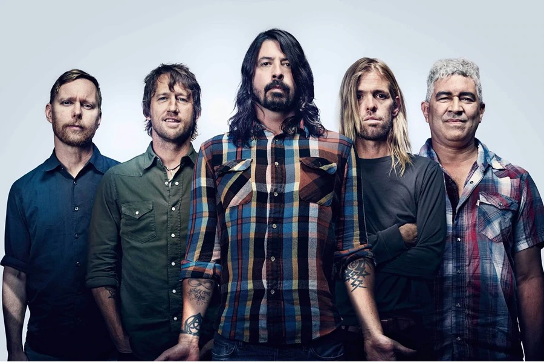

Foo Fighters es una banda de rock estadounidense formada en la ciudad de Seattle en 1994 por Dave Grohl, exbaterista de Nirvana y Scream. El grupo debe su nombre a los ovnis y los diversos fenómenos aéreos que fueron reportados por los pilotos de los aviones aliados en la Segunda Guerra Mundial, que se conocen colectivamente como Foo Fighters. Antes del lanzamiento de su álbum debut en 1995, Grohl, como único miembro oficial, reclutó al bajista Nate Mendel y el baterista William Goldsmith, ambos anteriormente miembros de Sunny Day Real Estate, así como su compañero en las giras de Nirvana, Pat Smear como guitarrista para completar la alineación.
| Año | Disco |
|---|---|
| (1995) | Foo Fighters |
| (1997) | The Colour and the Shape |
| (1999) | There Is Nothing Left to Lose |
| (2002) | One by One |
| (2005) | In Your Honor |
| (2007) | Echoes, Silence, Patience & Grace |
| (2011) | Wasting Light |